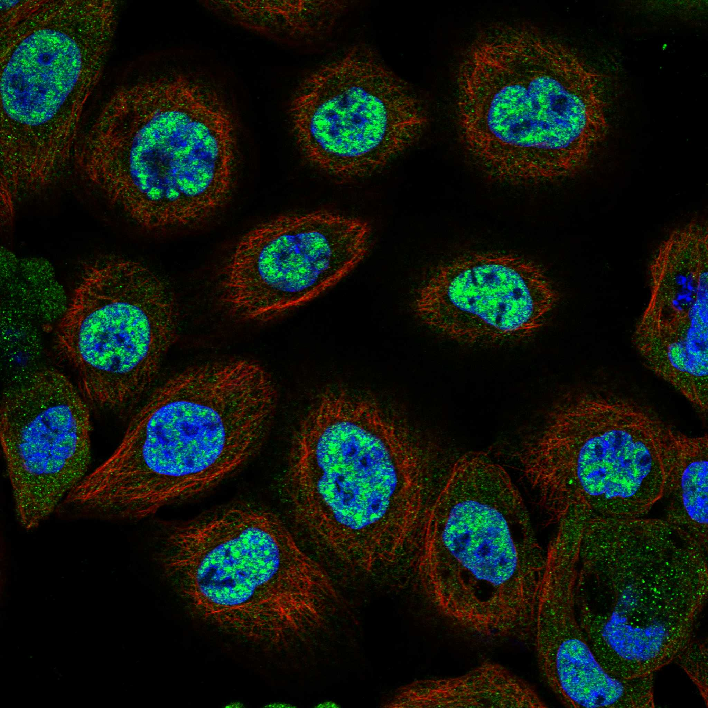
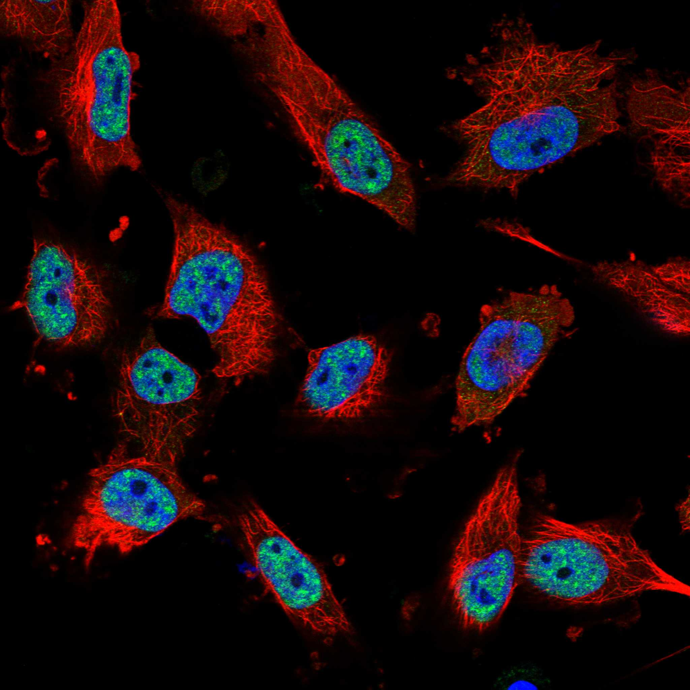
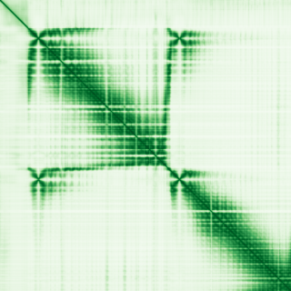

type: protein-evaluation gene: "EPG5" date: 2026-06-03 tags: [protein-scout, nuclear-protein, evaluation] status: scored ---
EPG5 核蛋白评估报告 (Full Re-evaluation)
1. 基本信息
| 项目 | 内容 |
|---|---|
| 基因名 / 别名 | EPG5 / KIAA1632 |
| 蛋白名称 | Ectopic P granules protein 5 homolog |
| 蛋白大小 | 2579 aa / 292.5 kDa |
| UniProt ID | Q9HCE0 |
| 评估日期 | 2026-06-03 |
IF 图像:  
2. 评分总览
| 维度 | 得分 | 满分 | 加权后 | 关键证据摘要 |
|---|---|---|---|---|
| 核定位特异性 | 7/10 | ×4 | 28 | HPA: Nuclear speckles; UniProt: Cytoplasm, perinuclear region; Lysosome |
| 蛋白大小 | 2/10 | ×1 | 2 | 2579 aa / 292.5 kDa |
| 研究新颖性 | 2/10 | ×5 | 10 | PubMed strict=82 篇 (≤100→2) |
| 三维结构 | 8/10 | ×3 | 24 | AlphaFold v6 pLDDT=73.5; PDB: 7JHX |
| 调控结构域 | 7/10 | ×2 | 14 | InterPro: IPR051436, IPR058750, IPR059030; Pfam: PF26103, PF |
| PPI 网络 | 3/10 | ×3 | 9 | STRING 15 partners; IntAct 10 interactions |
| 互证加分 | — | max +3 | 2.0 | PDB+AF+STRING+IntAct cross-validation |
| 原始总分 | 89.0/180 | |||
| 归一化总分 | 49.4/100 |
3. 详细分析
3.1 核定位证据
| 来源 | 定位 | 可信度 |
|---|---|---|
| Protein Atlas (IF) | Nuclear speckles | Approved |
| UniProt | Cytoplasm, perinuclear region; Lysosome | Swiss-Prot/TrEMBL |
IF 图像获取: IF图像已下载并嵌入 (2张)
GO Cellular Component:
- cytoplasm (GO:0005737)
- lysosome (GO:0005764)
- perinuclear region of cytoplasm (GO:0048471)
结论: 主要核定位，HPA 可靠性良好，有辅助数据源支持。
3.2 蛋白大小评估
评价: 大小偏离理想范围，实验设计需特殊考虑。
3.3 研究现状
| 指标 | 数值 |
|---|---|
| PubMed strict count | 82 |
| PubMed broad count | 120 |
| 别名(未计入scoring) | Aliases observed but not used for scoring: KIAA1632 |
关键文献: 1. SDC1-dependent TGM2 determines radiosensitivity in glioblastoma by coordinating EPG5-mediated fusion of autophagosomes with lysosomes.. *Autophagy*. PMID: 35913916 2. EPG5-Related Disorder.. **. PMID: 36228046 3. Epg5 deficiency leads to primary ovarian insufficiency due to WT1 accumulation in mouse granulosa cells.. *Autophagy*. PMID: 35786405 4. The spectrum of neurodevelopmental, neuromuscular and neurodegenerative disorders due to defective autophagy.. *Autophagy*. PMID: 34130600 5. The autophagy protein ATG-9 regulates lysosome function and integrity.. *The Journal of cell biology*. PMID: 40202485
评价: 研究基础较多，新颖性有限。
3.4 三维结构分析
| 指标 | 数值 |
|---|---|
| AlphaFold 版本 | v6 |
| AlphaFold 平均 pLDDT | 73.5 |
| 高置信度残基 (pLDDT>90) 占比 | 8.0% |
| 置信残基 (pLDDT 70-90) 占比 | 67.6% |
| 中等置信 (pLDDT 50-70) 占比 | 8.3% |
| 低置信 (pLDDT<50) 占比 | 16.1% |
| 有序区域 (pLDDT>70) 占比 | 75.6% |
| 可用 PDB 条目 | 7JHX |
PAE (Predicted Aligned Error): 
评价: AlphaFold 高质量预测（pLDDT=73.5，有序区 75.6%），结构可靠。
3.5 结构域分析
| 来源 | 结构域 |
|---|---|
| InterPro/Pfam | InterPro: IPR051436, IPR058750, IPR059030; Pfam: PF26103, PF26573 |
染色质调控潜力分析: 存在已知结构域注释，可作为功能研究的结构基础。
3.6 PPI 网络
STRING 预测互作 (combined score >0.4):
| Partner | Combined Score | Experimental | 功能类别 |
|---|---|---|---|
| STX17 | 0.811 | 0.000 | — |
| WDR45 | 0.808 | 0.000 | — |
| ATG5 | 0.800 | 0.000 | — |
| PLEKHM1 | 0.753 | 0.000 | — |
| EI24 | 0.732 | 0.000 | — |
| ATG2B | 0.723 | 0.000 | — |
| ATG14 | 0.723 | 0.000 | — |
| SNAP29 | 0.720 | 0.000 | — |
| ATG12 | 0.706 | 0.000 | — |
| TECPR2 | 0.683 | 0.000 | — |
实验验证互作 (IntAct):
| Partner | 方法 | PMID | ||
|---|---|---|---|---|
| Psmb5 | psi-mi:"MI:0007"(anti tag coimmunoprecipitation) | pubmed:26496610 | imex:IM-24272 | |
| Spn | psi-mi:"MI:0096"(pull down) | imex:IM-16527 | pubmed:25294943 | |
| NetB | psi-mi:"MI:0096"(pull down) | imex:IM-16527 | pubmed:25294943 | |
| Ten-m | psi-mi:"MI:0096"(pull down) | imex:IM-16527 | pubmed:25294943 | |
| Q01160 | psi-mi:"MI:0007"(anti tag coimmunoprecipitation) | pubmed:33845483 | pmc:PPR177217 | |
| BTNL9 | psi-mi:"MI:0007"(anti tag coimmunoprecipitation) | pubmed:33961781 | imex:IM-29278 | |
| GABARAP | psi-mi:"MI:1314"(proximity-dependent biotin identi | pubmed:34524948 | imex:IM-30012 | |
| GABARAPL1 | psi-mi:"MI:1314"(proximity-dependent biotin identi | pubmed:34524948 | imex:IM-30012 | |
| GABARAPL2 | psi-mi:"MI:1314"(proximity-dependent biotin identi | pubmed:34524948 | imex:IM-30012 | |
| ENST00000282041 | psi-mi:"MI:2195"(clash) | pubmed:23622248 | imex:IM-30030 |
PPI 互证分析:
- STRING + IntAct 均有数据
- STRING partners: 15，IntAct interactions: 10
- 调控相关比例: 0 / 15 = 0%
评价: STRING 15 个预测互作，IntAct 10 个实验互作。调控相关配体占比 0%。
3.7 多库互证
| 维度 | 来源 | 结果 | 是否一致 |
|---|---|---|---|
| 三维结构 | AlphaFold pLDDT=73.5 + PDB: 7JHX | pLDDT=73.5, v6 | 预测+实验 |
| 定位 | UniProt + HPA | Cytoplasm, perinuclear region; Lysosome / Nuclear speckles | 一致 |
| PPI | STRING + IntAct | 15 + 10 interactions | 数据充分 |
互证加分明细:
- PDB + AlphaFold 双源验证: +0.5
- 多库定位一致 (3源): +0.5
- STRING + IntAct 双源验证: +0.5
- 结构域 + AlphaFold 质量: +0.5
- PDB 多条目覆盖: +0
总分: +2.0 / max +3
4. 总体评价
推荐等级: ⭐⭐
核心优势: 1. EPG5 — Ectopic P granules protein 5 homolog，研究基础较多，新颖性有限。 2. 蛋白大小2579 aa，大小偏离理想范围，实验设计需特殊考虑。
风险/不确定性: 1. PubMed 82 篇，已有一定研究基础 2. 结构数据质量可接受
下一步建议:
- [ ] 查阅最新关键文献补充研究背景
- [ ] 获取 Protein Atlas IF 图像确认亚细胞定位
- [ ] 设计体外实验验证核定位及潜在调控功能
5. 数据来源
- UniProt: https://www.uniprot.org/uniprotkb/Q9HCE0
- Protein Atlas: https://www.proteinatlas.org/ENSG00000152223-EPG5/subcellular
- PubMed: https://pubmed.ncbi.nlm.nih.gov/?term=EPG5
- AlphaFold: https://alphafold.ebi.ac.uk/entry/Q9HCE0
- STRING: https://string-db.org/network/9606.ENSP00000
- Data fetched live: 2026-06-03
<!-- DOMAIN_HUMANPPI_REPAIR_START -->
Domain/SMART 与 humanPPI 补充（2026-06-07）
SMART / UniProt domain
| Source | Data |
|---|---|
| UniProt | Q9HCE0 |
| SMART | 未在 UniProt xref 中检出 SMART 条目 |
| UniProt Domain [FT] | 未检出显式 UniProt Domain feature |
| InterPro | IPR051436;IPR058750;IPR059030; |
| Pfam | PF26103;PF26573; |
humanPPI / HPA Interaction
Source: https://www.proteinatlas.org/ENSG00000152223-EPG5/interaction
| Partner | Datasets | AF3/HPA structure |
|---|---|---|
| USP8 | Biogrid | false |
<!-- DOMAIN_HUMANPPI_REPAIR_END -->